Audition pour le poste MCF n°261191
Section 60 - INSA Lyon (FIMI/GM) - LaMCoS (Multimap)
Conception mécanique et procédés - Comportements multi-échelles et multi-physiques des matériaux
![]()
May 19, 2026
Parcours
2011–2014
BAC Technologique STI2D
2014–2016
CPGE Techniques et Sciences Industrielles
2016–2020
ENS Paris-Saclay
- L3 pluridisciplinaire (GM, GC, GE)
- M1 Mécanique des Matériaux et des Structures
- M2 Formation à l’Enseignement Supérieure en Mécanique
- M2 Mécanique des mAtériaux pour l’inGénierie et l’Intégrité des Structures
2020–2023
Thèse au Laboratoire de Mécanique Paris-Saclay
Encadrée par Rodrigue Desmorat et Cécile Oliver-Leblond
2024–…
Post-doctorat à l’IMSIA (ENSTA)
Encadré par Véronique Lazarus
Thèse au LMPS
2020–2023
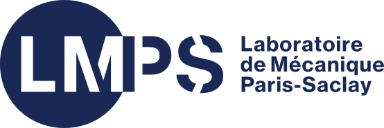
Formulation de l’endommagement anisotrope des matériaux et stuctures quasi-fragiles basée sur la simulation discrète de la fissuration
R. Desmorat, C. Oliver-Leblond
2 articles, 2 conférences internationales, 1 conférence nationale, 2 GdR.
Model damage in micro-cracking material \(\boldsymbol{\sigma} = \tilde{\mathbf{E}}(\mathbf{D}) : \boldsymbol{\varepsilon}\) from discrete simulations
1. Discrete simulations
21 loads
36 \(\mu\)-structures \(\to\) 76k steps
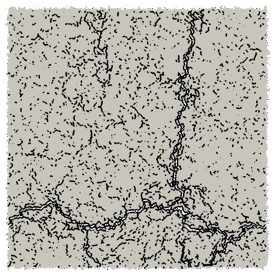
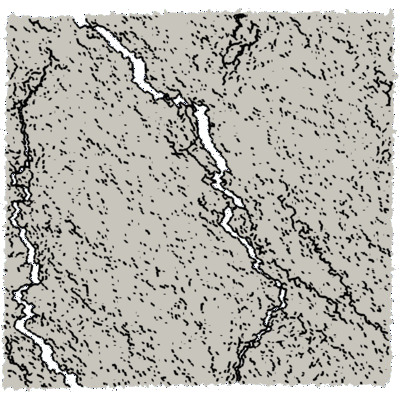
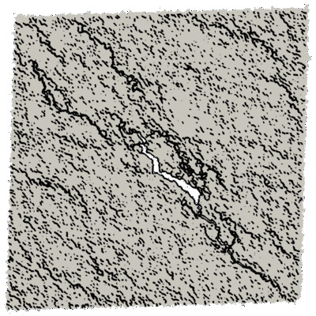
2. Effective elasticity tensors
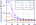
Analysis of symmetry classes
3. Modelling
Damage definition \[\mathbf{D} = \mathbf{1} - \frac{1}{\kappa_0} \mathrm{tr}_{12} (\mathbf{E})\]
Harmonic decomposition
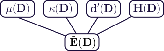
Loiseau et al. (2023) and Védrine et al. (2025) Dataset: https://doi.org/10.57745/LYHM4W
Postdoc at IMSIA - Overview
2024–Now
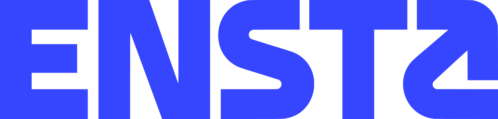
Theoretical and numerical study of crack propagation
in heterogenous and/or anisotropic materials
V. Lazarus
2(+3) articles, ?(+2) international conferences, ?(+?) national conferences.
Open-source codes for 2D crack propagation
floiseau/gcrack (LEFM)
floiseau/fragma (phase-field)
Main features
- Load control
(path-following) - Fracture anisotropy
- Heterogeneities (fragma)
- Fatigue (gcrack)
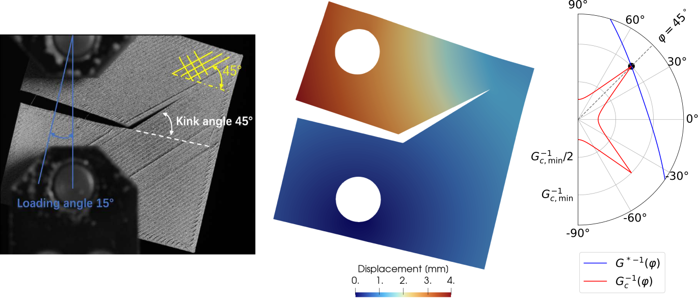
LEFM = Linear Elastic Fracture Mechanics
Postdoc at IMSIA - Numerical aspects
Develop robust numerical tools for crack propagation in anisotropic materials
Load control
Force load + Fracture = Instable
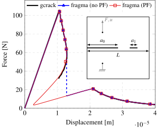
Loiseau & Lazarus (2026)
- Novel path-following method
- Comparison phase-field vs LEFM
Limiting numerical bias in phase-field simulations of fracture
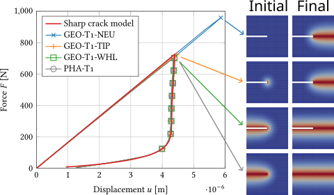
Mesh-induced bias
E. Zembra & H. Henry (PMC)
- Quantify mesh bias in crack path prediction
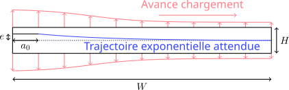
Postdoc at IMSIA - Applications
Simulate crack propagation for real problem
External collaborations
Fracture in rotating structures
G. Yakir & P. Reis (EPFL)
- Determination of the crack propagation threshold
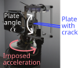
Optimization of dissipation during crack propagation
J. Triclot (LMA)
- Simulation of crack propagation
with load control
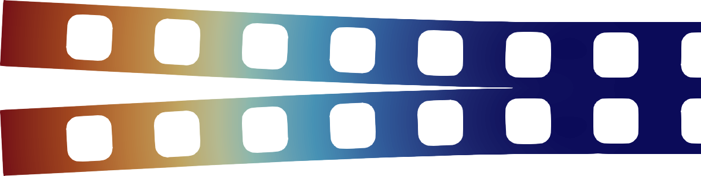
Sparse analytical regressions
Discussions for applications at Safran Aircraft Engines
TODO
illustration
And numerous collaborations at IMSIA
Fracture in
3D-printed structures
Polycarbonate (X. Zhai)
Duplex steel (D. Roucou & N. Habib)
Repaired steel structures (L. Kiakouama)
Others
Mixed mode fracture in PMMA (D. Roucou)
Specimen design (K. Paquet)
Encadrements
Effect of crack distribution on the elasticity tensor
2022 - A. Marlot - M1 ENS Paris-Saclay

Study of size effect in discrete simulation
2023 - L. Védrine - M2 ENS Paris-Saclay
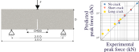
Phase-field simulations of anisotropic fracture
2024 - A. Ecotiere - 2A ENSTA
TODO
TODO
TODO
Crack propagation in mixed mode I+II in CCT specimen
2025 - Y. M. V. Epongue Djeugoue - 2A ENSTA Experiments by D. Roucou at IMSIA.
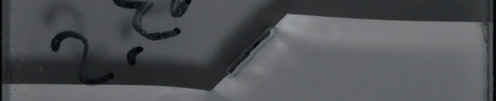
Projet d’intégration en recherche
Équipe Multimap du LaMCoS
Objectif
Objectif dans le dossier
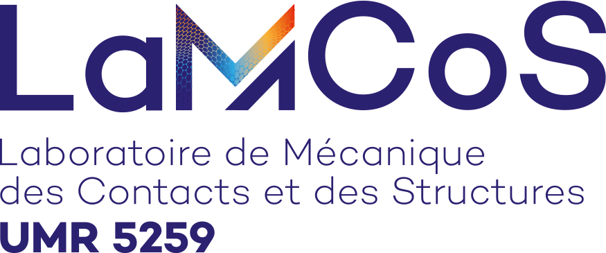
TODO Schéma récapitulatif des thématiques de recherche envisagés (freeplane ou inkscape)
Bases théoriques et numériques
S’appuyer sur la 3rd body method pour avoir un cadre permettant de facilement intégrer des comportement complexes pour les solides en contact.
Modélisation
Comportement du troisième corps
- Contact sans frottement
- Frottement (comportement anisotrope)
- Vers l’usure ??
Comportement des matériaux en contacts
- Ce qu’on veut (plasticité, comportements multi-physiques, etc.)
- Mon expertise : fracture et endommagement
Vers des applications industrielles
Le but final sera d’aller vers des applications industrielles ….
Possiblité de collaborations avec des industriels + Intervention dans le projet ANR
Cette slide correspond peut-être plutôt au besoin.
Activités d’enseignement
Avant 2020
Divers
Aide aux devoirs (pour lycéens)
Interventions l’IUT de Cachan (M2E FESup)
2020–2023
Mission d’enseignement ENS Paris-Saclay - L3 et M1 en Génie Civil
Méthodes Numériques, Mécanique des Fluides, Propagation d’ondes, Matlab.
2024
Vacations ENSTA - 1A et 2A Mécanique
MMC solide élastique, Comportements non-linéaires, Fatigue, Rupture, Projet Matlab.
Évolution des formations
- Sujet de TD de Méthodes Numériques
- Supports TP et Examen de Mécanique de la rupture en FEniCSx
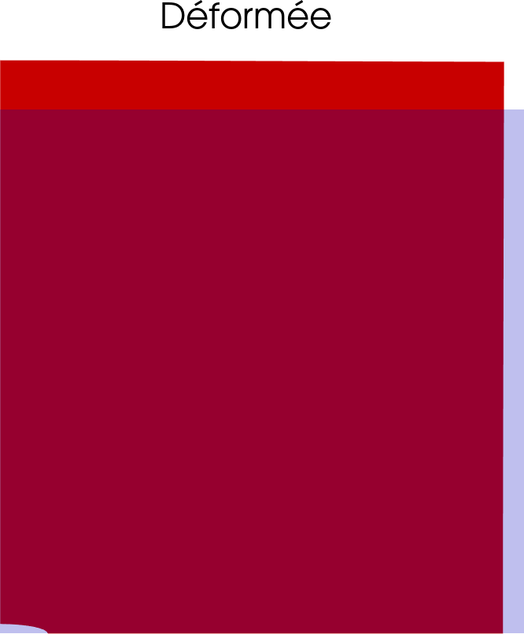
Adéquation au profil recherché
Intégration dans les formations
Mise en situation pédagogique
Flavien Loiseau